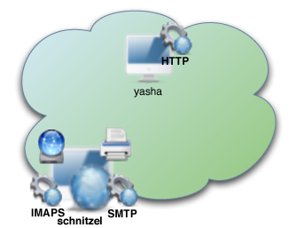
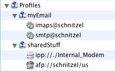
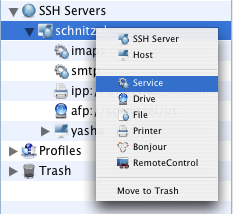
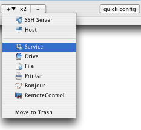
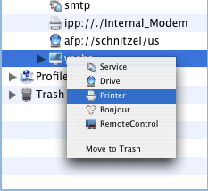
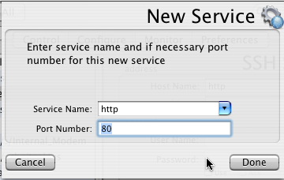
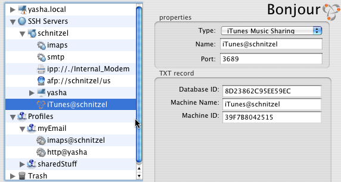
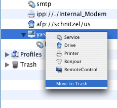
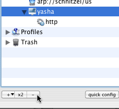
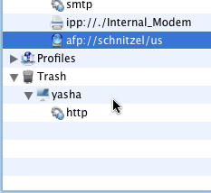

This picture
demonstrates SSH
Server (schnitzel)
which runs IMAPS and SMTP
servers, has Fax Modem
and AFP shared drive and provide access to another
host
(yasha) which runs HTTP
server.
World of AlmostVPN consist of SSH Servers, which provide access to Remote Resources and Profiles which represent collection of the Remote Resources which user want to be able access at the same time. While configuring AlmostVPN you will do one of two things:
defining remote resources,
combining these resources into profiles.
Think about SSH Server as a portal which provides access to
set of
resources. These resources could be network services ( like IMAP,
SMTP or POP ), remote drives ( AFP, SMB or WebDAV), remote printers
or something else. These resources could be located on the SSH
Server itself or they could be located on some other host(s)
accessible via SSH Server. In some cases, one SSH Server could
provide access to another SSH Server, which in turn could act as a
portal to different set of resources.
|  |
|
| Example: This picture
demonstrates SSH
Server (schnitzel)
which runs IMAPS and SMTP
servers, has Fax Modem
and AFP shared drive and provide access to another
host
(yasha) which runs HTTP
server.
|
|
Usually, you will want to connect to SSH Server in order to
gain
access to some resources. Depending on nature of what you want to do
at particular moment, you may want to get access to different set of
resources. In some cases you may want to access particulars service
(like SMTP in order to send mail), in other case you may wont to
access ALL services associated with particular remote host. In
AlmostVPN world, collection of resources you want to make
available at the same time is called – Profile.
| Example: This picture
demonstrates two
profiles: myEmail
and sharedStuff. myEmail
profile, when running,
provides access to IMAPS and SMTP
servers on schnitzel. sharedStuff,
provides access to Fax Modem and AFP
share.
|
 |
|  |  |  |
| right-click(control-click)
on parent object in the object hierarchy tree. than select kind of
object you want to add |
click on "+" button
at the left
bottom corner of the pane. than select kind of object you want to add.
object will be added to the object currently selected in the tree. |
NOTE: you will see
different set of resources depending on kind of parent object. |
|  |
| as soon as you
added an object, you will have a chance to specify all neccesary
properties in object kind specific dialog. |
|  |
| you can change all the properties at any time, by selecting the object you wont to modify in the object hierarchy . once you have selected an object, its properties will be displayed in the left half of the pane. |
|  |  |  |
| right-click(control-click)
on the object you want to delete and select "Move to Trash" |
select object you
want to delete and click "-" button at the left bottom corner of the
pane. |
NOTE: Once
you deleted object, it gets moved to "Trash". You can "undo"
delete, by dragging deleted object from the "Trash" and dropping it on
the parent object. NOTE: There is no way to delete objects from the "Trash". "Trash" gets emptied automatically every time you stop AlmostVPN Preference Pane. |